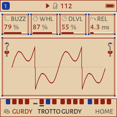
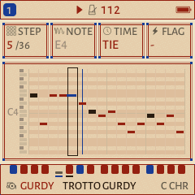
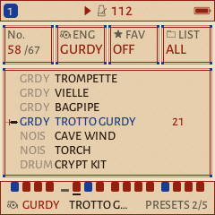
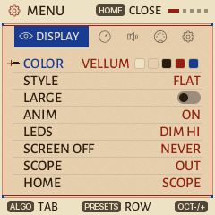
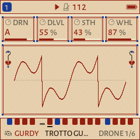
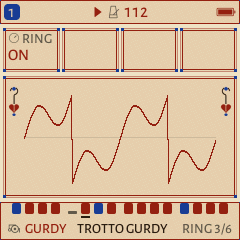

Welcome to the dance
ESTAMPIE turns the M-VAVE FM-1 into a groovebox for mediæval dance music: a hurdy-gurdy and a bagpipe over their drones, lutes, harps and psalteries, shawms and recorders, a tabor and nakers, and monks' chant, in the church modes and the old tunings.
It is a fork of GHOULBOX, Jason Persinger's dungeon-synth firmware, which is itself a fork of Felucca, the open-source FM-1 firmware by Hügelton Instruments. Everything they do still works here: four tracks, a 64-step sequencer, songs, the arpeggiator, chord keys, effects, the web editor and backups from Felucca; the hurdy-gurdy, the old tunings, the drone latch, the reverb and tape, and GHOULBOX's sounds and scenes. ESTAMPIE adds a dance to start with (a fourteenth-century trotto), a dance band's drum kit, mediæval sounds and patterns, and a look taken from a manuscript page.
This guide is GHOULBOX's, by Jason Persinger, reworked for ESTAMPIE: the instrument underneath is the same, so most of it still holds word for word.
How to use this guide
- New to synthesizers? Read Part I to get the FM-1 running, then work through Part II. Each chapter there ends in a Try this box: a few steps on the instrument that make the idea audible. Nothing you do in them can break anything, and holding SAVE undoes the last sound or pattern load.
- Know synths already? Part III is the reference: every page, every sound, every setting.
- Want to make a piece? Part IV walks through one from an empty track to a recording, with a cheat sheet of modes and chords.
- Rather watch? GHOULBOX's five short video lessons, on the FM-1's own screen, go from a single drone to a finished piece: youtube.com/playlist?list=PLMUs0QD7QfOw (or search YouTube for GHOULBOX Lessons). They show GHOULBOX's dungeon look and sounds, but the knobs and pages are the same.
Buttons and knobs are written like PLAY. A path such as SEQ › STEP means "press SEQ until the STEP page shows".
- I · The instrument
- 1 · Meet the FM-1
- 2 · Install, back up, go back
- 3 · Five-minute start
- 4 · The panel
- 5 · The screen
- II · Synth basics
- 6 · What a synthesizer does
- 7 · Notes, keys and scales
- 8 · Tone: oscillators and the filter
- 9 · Shape in time: the envelope
- 10 · Movement: the LFO and modulation
- 11 · Voices: poly, mono and glide
- 12 · Space: effects
- 13 · Time: tempo, steps and the arpeggiator
- III · Reference
- 14 · Every page
- 15 · The sounds
- 16 · Effects
- 17 · Sequencer, patterns and songs
- 18 · Saving your work
- 19 · The menu
- 20 · MIDI, USB and recording
- IV · Making music
- 21 · What mediæval dance music is
- 22 · Your first piece, step by step
- 23 · Modes and chords
- 24 · Recipes
- 25 · Recording and sharing
- V · Help
- 26 · Troubleshooting
- 27 · Glossary
- 28 · Credits and licence
The instrument
What the FM-1 is, how to put ESTAMPIE on it, and how to find your way around its knobs, buttons and screen.
- Meet the FM-1
- Install, back up, go back
- Five-minute start
- The panel
- The screen
1Meet the FM-1
The FM-1 is a small battery-powered synthesizer: a keyboard, a screen, eight knobs, a speaker and a computer chip that makes the sound. ESTAMPIE is the program that runs on that chip.
M-VAVE sells the FM-1 with its own firmware, an FM synthesizer. ESTAMPIE replaces that program completely, so most of M-VAVE's manual (its pages, presets and buttons) does not apply. The hardware is the same, though, and this chapter covers it.
On the top
- 27 keys (silicone, about two and a quarter octaves), each with a light under it. M-VAVE didn't make them velocity-sensitive, but ESTAMPIE can measure how hard you press 20 of them: turn on KEY TOUCH (chapter 19). Otherwise every key plays at the same strength, and a MIDI keyboard can add velocity (chapter 20).
- MASTER, the volume knob. It has a start and an end, like a volume knob on a radio.
- Seven endless knobs: SELECT, PRESETS, ALGORITHM and KNOB 1–4. They turn forever in either direction and move a value in clicks.
- Buttons for pages, transport (PLAY, REC) and octave (OCT−, OCT+).
- A 1.54-inch colour screen.
- A speaker, small but enough to practise with.
On the back
| Socket | What it's for |
|---|---|
| Audio out (3.5 mm) | Headphones, or a cable to speakers, a mixer or an audio interface. Plugging something in silences the speaker. Use a normal stereo (TRS, two black rings) plug: a phone-headset plug with three rings can buzz and may not silence the speaker. |
| MIDI IN (3.5 mm) | A cable from another instrument's MIDI OUT, through a small 3.5 mm-to-MIDI adapter. M-VAVE's manual doesn't say which of the two adapter wirings (called Type A and Type B) it uses; if a keyboard plays nothing through it, try the other type. |
| USB-C | Charging, and the connection to a computer: MIDI both ways, the FM-1's sound as a USB audio input, and the installer and editor. |
| Power switch | On and off. |
Power and battery
- A built-in 2000 mAh battery. M-VAVE quotes about 12 hours of play; that figure is for its own firmware, and ESTAMPIE's reverb works the chip harder.
- Charge it from any USB-C charger or computer port. It also runs from USB power.
- The battery level is in the top-right corner of the screen.
No Bluetooth
M-VAVE's firmware offers wireless (Bluetooth) MIDI. Felucca, GHOULBOX and ESTAMPIE don't: use USB or the MIDI IN socket instead.
Specifications
| Size | 161.5 × 96.5 × 28.6 mm |
| Weight | 251 g |
| Battery | 3.7 V lithium-polymer, 2000 mAh, charged over USB-C |
| Sound under ESTAMPIE | 44.1 kHz stereo; four tracks sharing 12 voices |
2Install, back up, go back
What you need
- A computer with Chrome or Edge (other browsers can't talk MIDI to the FM-1)
- A USB data cable (some cables only charge)
- No other music software open (it can hold on to the FM-1's MIDI port)
Install
- Connect the FM-1 and switch it on. Save a backup first: tick Before installing, save a complete backup on the installer page, or open the web editor at {{SITE}}/webapp/editor, allow MIDI access, and on the Settings tab press Save backup. Your music, saved projects, sound banks, samples and settings go to your computer as one file, which the editor's Restore backup puts back. (Official V15 can't make one, so from V15 there is nothing to save.)
- Open {{SITE}}/webapp/installer and press Install. Allow MIDI access when the browser asks.
- The installer switches the FM-1 to update mode and writes ESTAMPIE.
- When it says done, the FM-1 restarts with ESTAMPIE's illuminated initial. Hold HOME › SYSTEM › ABOUT shows the version.
Updating later
Save a backup in the web editor, then run the installer again. Your projects and sounds stay where they are.
If it won't start: USB recovery
If an update was interrupted, or ESTAMPIE won't start, switch the FM-1 on while holding OCT− on its own, and keep holding it for a second. Instead of the instrument, ESTAMPIE starts its USB rescue: a dark screen reading ESTAMPIE · USB RESCUE, no sound and no menus, only what the installer needs. Connect the cable and run the installer as usual: it finds the FM-1 and installs again. Your projects, sounds and samples are not touched.
Two starts in a row that fail within their first 30 seconds open the rescue on their own. To leave it without installing, switch the FM-1 off and on again.
Going back
To return to GHOULBOX, install it from ghoulbox.messy.quest; to return to Felucca, from hugelton.github.io/Felucca. Then restore your backup in its editor. The installer's Return to official V15 button saves a backup and puts back M-VAVE's own firmware (it comes with the page). If V15's sound banks are then empty or wrong, Restore the factory sounds below it writes V15's four factory banks back: a separate step that asks first, since it replaces every sound in those banks.
Your old music
Projects and user presets from GHOULBOX and Felucca load in ESTAMPIE. Sounds ESTAMPIE no longer lists (for example Felucca's techno presets) still load and play inside an old project; they are only missing from the menus. SAX sounds play on FLUTE, and the SLICE engine is left out of ESTAMPIE.
3Five-minute start
ESTAMPIE powers on ready to play a dance.
- Press PLAY. Four tracks play the TROTTO, a fourteenth-century Italian dance (from a manuscript in the British Library), in A Dorian at 112 BPM, with six quick steps to a bar. A hurdy-gurdy plays the tune over its drones (track 1), a lute plucks the root and fifth (2), a tenor recorder holds the tune's main notes (3), and a tabor keeps the dance going (4), in a small room's reverb. Press PLAY again to stop.
- Turn MASTER for volume. Headphones in the jack silence the speaker.
- Turn ALGORITHM to choose the track (T1–T4). Everything you do applies to that track.
- Turn PRESETS to change the track's sound while it plays. Your pattern stays.
- Play the keys to play the selected track. OCT− / OCT+ shift the octave.
- Turn SELECT to change the tempo.
- Turn KNOB 1–4 to shape the sound: on HOME they are the engine's four main controls.
Other scenes
This is the TROTTO scene. Hold HOME for the menu, and on SYSTEM › SCENE choose the scene a new FM-1 starts with (or every power-on, with SYSTEM › RESTORE LAST set to OFF). GHOULBOX's scenes are all still there: CRYPT (a low drone, a crypt choir, cave wind and slow tomb drums, 60 BPM), TAVERN (a dance gurdy, a harp, a lute and a light drum kit, 96 BPM), CHAPEL (cathedral organ, monks, a recorder and a fiddle, 66 BPM), BLANK (a hurdy-gurdy, a pad, monks and a drone with no notes, for starting from nothing) and DUNGEON (GHOULBOX's own: a hurdy-gurdy ballad over a crypt pad, monks and a drone in D minor, 72 BPM, in a hall).


4The panel
The FM-1's controls, as Felucca (and so GHOULBOX and ESTAMPIE) use them. The labels printed on the panel are M-VAVE's; most still fit, and the diagram shows what each one does now.

Panel diagram from Felucca's documentation (Hügelton Instruments, GPL-3.0). The screen in it shows Felucca's look; ESTAMPIE's is in the next chapter.
The page key printed SEL on the panel opens the scale page, which the screen calls SCL. SCL is also that page's KNOB 2, the scale itself (MAJ, MIN, DOR …).
Three ways to press a button
- Tap a page button for its page, and again for the next page in its group (chapter 14 lists them all). HOME returns to the home screen.
- Hold FX, GLO, SEL, EDIT, SEQ or REC for a quick layer: shortcuts on the keys and knobs, with a map on the screen. Let go to close it.
- Double-tap one of them to keep its layer open without holding; tap it again to close.
Other holds: HOME opens the menu and SAVE undoes. What the layers hold:
- FX: performance effects on the keys (chapter 16).
- GLO: the black keys F♯ G♯ A♯ C♯ of the lower octave mute tracks 1–4, the white keys F–B solo them while held, C unmutes all, D starts MIDI LEARN (LRN), E plays the FILL steps while held, the upper F taps the tempo, and the upper F♯ G♯ A♯ C♯ latch a drone (chapter 15). KNOB 1–4 are the four tracks' levels; SELECT is the tempo even when BPM LOCK is on.
- SEL: press any key to make it the ROOT; KNOB 1–4 are ROOT, SCL, CHRD and VOIC.
- EDIT: each white key picks an engine.
- SEQ (SEQ TOOLS): the white keys from the lowest F are tools for the selected track's steps: CLEAR, REVERSE, SHIFT ‹, SHIFT ›, RANDOM and COOK (a few notes changed). KNOB 1–4 are LEN, DIV, SWG and GATE (chapter 13).
- REC: the white keys from the lowest F are CLEAR (the selected track's steps and automation, at once; hold SAVE to undo), CLICK, COUNT-IN and CLICK LEVEL; each press steps to the next value.
Yes and no
Wherever the FM-1 asks something (a dialog, an action page), OCT+ means yes / do it and OCT− means no / go back. Their lights show when they answer.
5The screen
ESTAMPIE draws Felucca's pages as a page of a manuscript: vellum, iron-gall ink, vermilion headings and lapis blue. The text is set in Alegreya Sans, with Cinzel's Roman capitals for the large figures. A marginal ornament (a crozier's curl with a hanging ivy leaf) stands either side of the scope, and GHOULBOX's little sword still points at what is selected. At power-on the screen shows ESTAMPIE's illuminated initial.


- The header shows play state, tempo, the track number and battery.
- Knob cards: most pages show four cards in a row, one for each of KNOB 1–4, left to right. Each has a name, a value and a small gauge. The one you just turned is drawn in the accent colour.
- The scope on HOME draws the sound itself as a moving line: smooth for soft sounds, jagged for bright ones.
- Messages (for example SOUND INIT, STOP TO SAVE or NO SAMPLE) appear in the header for a moment.
- Colours: a new FM-1 starts in VELLUM (vellum, ink, vermilion and lapis); TAVERN is its dark version, for low light, and GHOULBOX's CRYPT (stone, bone, torch amber, blood red) is still there. If you came from GHOULBOX or Felucca, your saved palette stays: hold HOME and pick COLOR › VELLUM.
The lights
Idle buttons and keys glow dimly so you can find them in the dark. A button that does something right now breathes slowly. PLAY turns green while playing, and the keys light up with the notes being played, whether by you, the sequencer or MIDI. MENU › LEDS sets how bright the idle glow is.
Synth basics
How a synthesizer makes and shapes sound, in plain words. Each chapter ends in a short exercise to try on the FM-1. Read them in order: each builds on the one before.
- What a synthesizer does
- Notes, keys and scales
- Tone: oscillators and the filter
- Shape in time: the envelope
- Movement: the LFO and modulation
- Voices: poly, mono and glide
- Space: effects
- Time: tempo, steps and the arpeggiator
6What a synthesizer does
Every sound is air shaking back and forth. A synthesizer is a machine that decides exactly how it shakes.
Any sound you hear differs from any other in three ways:
- Pitch: how high or low. A fast shake is a high note, a slow one a low note.
- Loudness, and how it changes: a harp note starts loud and fades; an organ note stays the same while held.
- Tone (or timbre): what makes a flute and a trumpet sound different on the same note. Bright sounds carry many high overtones; dark, soft sounds carry few.
A synthesizer has a part for each of these. Most of them, including the FM-1, are built the same way:
- The oscillator makes the raw sound at the pitch of the key.
- The filter shapes the tone, usually by removing brightness.
- The amplifier sets the loudness over time, shaped by an envelope.
- Effects place the sound in a space: reverb, delay, chorus, tape.
On top of that sit modulators, which move the other parts by themselves (a slow wobble, a swell), and a sequencer, which plays notes for you.
Engines
The FM-1 under ESTAMPIE has 13 engines: thirteen different ways of making the raw sound. ANALOG copies the classic synthesizers of the 1970s and 80s; VOICE sings vowels; GURDY models a hurdy-gurdy; SAMPLE plays recordings of real instruments. Each engine comes with ready-made settings called presets (or sounds), {{NSOUNDS}} of them in all.
Tracks
ESTAMPIE has four tracks, like four musicians in a dance band. Each has its own engine and sound, its own notes in the sequencer, and its own settings. The ALGORITHM knob chooses which track you are playing and editing; the screen shows T1–T4. All four share 12 voices (12 notes sounding at once), so a big chord on one track can cut short a long note on another.
- Press PLAY. Turn ALGORITHM to T2 (the lute).
- Hold GLO to open its layer. While holding it, the first four black keys (from F♯ in the lower octave) mute and unmute tracks 1–4; their lights show which are sounding. Mute all but track 2 and listen to the lute alone, then bring the others back one at a time.
- With T2 still selected, turn PRESETS slowly: the lute's part plays on a different sound each time, while the notes stay the same. Hold SAVE to undo the last change.
7Notes, keys and scales
You don't need to read music to play the FM-1. A few facts about the keyboard go a long way.
The keyboard
The keys repeat a pattern of 7 white and 5 black keys. Each group of 12 is an octave: the same note names again, twice as high. The white keys are named A to G; the white key just left of each pair of two black keys is C. Each key is one semitone above the key to its left, black or white.
OCT− and OCT+ move the whole keyboard down or up an octave.
As you play, the screen names what you're playing: the note with its octave (D4), or the chord when you hold several keys (Dm, A7, Gsus4; C/E is C major with E as its lowest note; A5 is an open fifth, a drone's). On HOME the name is large in the middle of the screen, the notes under it, and it stays (faded) after you let go, until you play again; notes from MIDI IN are named too. On the other pages it appears at the top of the screen while you hold the keys. It is a quick way to learn the chords in chapter 23 by ear and by name. MENU › CONTROL › NOTE NAMES turns it off.
Scales and keys
A scale is a choice of 7 of the 12 notes that sound good together. A piece "in D minor" uses mostly the notes of the D minor scale, starts and ends on D, and feels like home on D. Mediæval tunes use the modes, the scales of the church: Dorian, Phrygian, Lydian and Mixolydian, the white keys started on D, E, F and G. The TROTTO is in A Dorian. (Minor and major came later; GHOULBOX's dungeon synth loves minor for its sadness.)
The root is the home note (D in D minor, A in A Dorian). Every scale has a different mood:
| Scale (SCL) | Mood |
|---|---|
| DOR (Dorian) | Minor but hopeful, with a bright sixth: the commonest mode of mediæval dances and folk tunes |
| MIX (Mixolydian) | Major with a flat seventh: bagpipe tunes, a bright, outdoor dance |
| LYD (Lydian) | Major with a raised fourth: bright and a little strange, like an old hymn |
| PHRY (Phrygian) | Dark and tense, the note above the root a little too close |
| MIN (natural minor) | Sad and plain (the Aeolian mode); GHOULBOX's dungeon-synth default |
| HARM (harmonic minor) | Old-world, dramatic, "castle" sounding |
| PHDOM (Phrygian dominant) | Desert ruins and old temples: Phrygian with a bright major third |
| HUNG (Hungarian minor) | Gothic and haunted: harmonic minor with a raised fourth |
| DHARM (double harmonic) | Exotic and ceremonial: two wide steps, a sorcerer's tower |
| MPEN (minor pentatonic) | Five notes, nothing clashes: easy to improvise with |
| MAJ (major) | Bright, happy: a tavern, a sunrise (the Ionian mode) |
Let the FM-1 play only the right notes
On SEL, set ROOT (KNOB 1) and SCL (KNOB 2), then QNT (KNOB 3) to WHITE. Now the white keys play only the notes of your scale, starting on the root at the C key, and the black keys are silent. You can't hit a wrong note.
QNT SNAP keeps every key but moves a note that isn't in the scale down to the nearest one that is. QNT OFF is the plain keyboard.
- Stop playback. Choose T1 with ALGORITHM.
- Tap SEL. Turn KNOB 1 to ROOT D, KNOB 2 to SCL MIN, KNOB 3 to QNT WHITE.
- Play the white keys from C upwards: you hear the D minor scale. Play a slow, simple tune; finish it on the C key (now D) and hear it come home.
- Change SCL to DOR and play the same tune: the sixth note lifts, and it sounds like a dance. Try PHRY: darker. Try HARM: suddenly a castle.
The scale settings belong to the track, so set them on each track you play from the keys. Chords and the scale cheat sheet are in chapter 23.
8Tone: oscillators and the filter
The oscillator makes the raw sound; the filter carves it.
Waveforms
The oscillator repeats one shape, the waveform, over and over. Its shape decides the raw tone:
| Wave | Sounds like |
|---|---|
| SIN (sine) | Pure and round, almost a whistle. No overtones. |
| TRI (triangle) | Soft and hollow: a recorder or a flute. |
| SQR (square) | Hollow and reedy: a clarinet, old video games. |
| SAW (sawtooth) | Bright and buzzy, full of overtones: strings, brass. The usual start for pads. |
| PWM (pulse width) | A square that keeps changing its shape: rich and moving. |
Two oscillators slightly out of tune with each other (detune) beat against each other and sound wider and warmer, like several players at once.
The filter
The filter removes part of the sound. The usual one is a low-pass filter: it lets the low part through and takes away the bright part above a point called the cutoff.
- CUT (cutoff): turn it down and the sound gets darker, softer and further away; up, brighter and closer.
- RES (resonance): makes the filter ring at the cutoff, adding a whistling, vocal edge. High values sound "synthy".
- KTR (key tracking): how much the cutoff follows the notes, so high notes don't sound duller than low ones.
Not every engine is built this way. GURDY, VOICE, PHYS and the others have their own controls for tone (chapter 15), but the idea holds: some control makes the sound brighter or darker.
- On T2, turn PRESETS to CRYPT PAD (an ANALOG sound) and go to HOME.
- On HOME, KNOB 1 is CUT and KNOB 2 is RES. Hold a chord with one hand and slowly turn KNOB 1 down, then up: the pad closes and opens like a door.
- Turn RES up halfway and sweep CUT again: hear the whistle ride along.
- Tap EDIT for all eight ANALOG controls. Change WAVE (KNOB 1) between SAW, SQR, TRI and SIN and hear the raw tone change. Hold SAVE to undo if you get lost.
9Shape in time: the envelope
An envelope describes how a note changes from the moment you press the key until it falls silent.
The FM-1's envelope has four stages, called ADSR:
| Stage | What it sets | Low | High |
|---|---|---|---|
| ATK attack | How long the note takes to reach full loudness | Instant: a pluck, a hit | A slow swell: strings, choirs |
| DEC decay | How long it takes to fall from the peak to the sustain level | A quick drop | A slow settle |
| SUS sustain | The loudness while the key stays held (a level, not a time) | Fades to silence: a harp, a bell | Holds: an organ, a pad |
| REL release | How long the note rings after you let go | Stops dead | Fades out slowly into the reverb |
A pluck (harp, lute): attack 0, short decay, sustain 0. A pad (strings, choir): long attack, full sustain, long release. An organ: attack 0, sustain full, short release.
The envelope does more than loudness
Tap ENV again for ENV DEST: how much the same envelope also moves the filter (FLT), the pitch (PIT) and the engine's shape control (SHP). Envelope on the filter makes a note start bright and darken as it fades, as real plucked strings do.
- Keep CRYPT PAD on T2. On HOME, KNOB 3 is attack and KNOB 4 is release; or tap ENV for all four.
- On ENV, turn ATK (KNOB 1) to zero, DEC (KNOB 2) to about a third, SUS (KNOB 3) to zero. Play a few notes: the pad is now a pluck.
- Turn REL (KNOB 4) up and hear each pluck ring on after you let go.
- Now the other way: ATK up high, SUS full. Each note swells in slowly, like a choir taking a breath.
10Movement: the LFO and modulation
A sound that never changes sounds like a machine. Modulation makes it move.
The LFO
An LFO (low-frequency oscillator) is an oscillator too slow to hear. Instead of making sound, it moves a control up and down for you, smoothly and endlessly.
- LFO page: RATE (how fast), WAVE (the shape of the movement: SIN and TRI glide smoothly, SQR jumps between two values, SAW ramps, S&H jumps to random values), PHS (where in its cycle each note starts) and FADE (how long it waits to come in after a note starts).
- LFO again for LFO 2: SYNC (OFF, or RATE locked to the tempo as a note length, from 4 bars to 1/32), TRIG (NOTE starts the LFO over with each note, FREE lets it run on) and POL (BI moves both ways, UNI only upward).
- LFO a third time for LFO DEST: how much it moves the pitch (PIT), the filter (FLT), the shape (SHP) and the loudness (AMP).
| LFO to… | Is called | Sounds like |
|---|---|---|
| Pitch, slow and small | Vibrato | A singer or violinist holding a note |
| Loudness | Tremolo | A shimmering organ, a pulsing pad |
| Filter | A sweep, a "wah" | The sound breathing open and closed |
The modulation matrix
Tap LFO a fourth time for MOD: four slots, each connecting a source to a destination with an amount (AMT, which can be negative to turn the movement upside down). KNOB 1 chooses the slot.
- Sources: LFO, ENV (the envelope), VEL (how hard a MIDI key is struck), KEY (how high the note is), RAND (a new random value each note), and from a MIDI controller MODW (the mod wheel), AT (aftertouch) and EXPR (an expression pedal).
- Destinations: pitch, cutoff, shape, loudness, pan, the four effect sends, the LFO's own rate, vibrato, the engine's eight controls (E1–E8), and VEL and TIME: each note's velocity and a step's timing, read as the note starts (humanize: chapter 17).
- On T2 with CRYPT PAD, tap LFO: RATE to about a quarter, WAVE to TRI.
- Tap LFO twice more (LFO DEST). Turn FLT (KNOB 2) up slowly while holding a chord: the pad starts to swell and fade by itself.
- Set FLT back to 0 and turn PIT (KNOB 1) up only a little: vibrato. Turn RATE up: a nervous warble. Further: a broken tape.
- On MOD, set slot 1 to SRC RAND, DST CUT, a small AMT: each note comes out a little different, as if played by a person.
11Voices: poly, mono and glide
How many notes a track plays at once, and how it moves between them.
Tap EDIT until the VOICE page shows. Its first knob, VCE, has four settings:
| VCE | What it does | Good for |
|---|---|---|
| POLY | Several notes at once: chords | Pads, organs, harps |
| MONO | One note at a time; a new key cuts the old note | Basses, lead melodies, the hurdy-gurdy |
| LEG (legato) | One note; if keys overlap, the note slides on without starting again | Smooth, singing melodies; flutes and voices |
| UNI (unison) | One note played by several voices, detuned against each other | Huge, wide leads and drones |
- GLD (glide, also called portamento): the pitch slides from one note to the next instead of jumping. A little sounds like a voice; a lot sounds like a siren.
- GLMOD: RATE (big jumps take longer to slide) or TIME (every slide takes the same time).
- PRIO (mono only): when several keys are held, which one plays: the LAST pressed, the LOW one or the HIGH one.
- VOICE 2 (tap EDIT again): DTUNE (how far apart the unison voices are), PAN (where the track sits from left to right) and MUTE.
- Choose T1 (the hurdy-gurdy) and turn PRESETS to LOFI FLUTE or TENOR RECORD.
- Tap EDIT until VOICE shows. Set VCE to LEG and GLD to about a fifth.
- Play a slow tune and let the keys overlap a little: the notes slide into each other. Lift between notes and they start fresh.
- Try VCE UNI on CRYPT PAD with one finger: one key, a wall of sound.
12Space: effects
Effects put the instrument in a room. In a stone church or a great hall, the room is half the music.
| Effect | What it does |
|---|---|
| Reverb | The echoes of a room, all blurred together: a closet, a chapel, a cathedral. The HALL rings for up to 12 seconds. |
| Delay | Distinct repeats of what you play, each quieter than the last: a call across a valley. |
| Chorus | A slightly wavering copy of the sound mixed in, as if several players: wider and shimmering. |
| Distortion | Overdrives the sound until it breaks up: grit, growl. |
| Tape | The whole mix through an old cassette: wavering pitch, warmth, dull treble and hiss. |
| Crush | A cheap old sampler: rougher, grainier, robotic at the extreme. |
Sends: one room, four players
There is one reverb, one delay and one chorus, shared by all four tracks, just as four musicians share one hall. Each track decides how much of itself to send into each: tap FX, and KNOB 1–4 are the track's distortion, chorus, delay and reverb amounts. A drone drowned in reverb and a dry, close melody in front of it is a classic picture: the band in front of you, the hall behind them.
Tap FX again to reach the shared effects themselves: SLICER, DLY, REVERB, CHORUS and TAPE (chapter 16).
- Play the scene. Tap FX until REVERB shows. Turn SIZE (KNOB 2) all the way down, then slowly all the way up.
- Turn DAMP (KNOB 3) up: the echoes go dark, like stone. Down: bright, like glass.
- Tap FX again until TAPE. Turn TAPE (KNOB 1) up to 100 and listen to the pitch waver. Add CRSH (KNOB 2) slowly: grit, then crunch.
- Back on the first FX page, choose T1 and turn its REV send (KNOB 4) to zero: the melody steps out of the hall and stands in front of you.
13Time: tempo, steps and the arpeggiator
Rhythm on the FM-1 comes from a clock that every track follows.
Tempo
The tempo is measured in BPM, beats per minute: 60 is one beat a second. Dances move: a trotto or a saltarello runs at about 100 to 130, a stately procession or a chant at 50 to 80 (and GHOULBOX's dungeon synth sits slow, 50 to 90). Turn SELECT to change it.
Steps
A step sequencer divides time into equal boxes, steps, and plays what is in each box in turn, round and round. Each track has its own row of up to 64 steps. Two settings decide how it moves; hold SEQ for them (KNOB 1 and 2):
- LEN: how many steps before it goes round again.
- DIV: how long each step is, as a fraction of a bar (a bar is four beats). 1/4 is one beat per step, 1/8 half a beat, 1/1 a whole bar; 8T fits three steps in a beat, for the lilt of a dance in 6/8. The TROTTO uses 8T, GHOULBOX's scenes 1/8.
LEN 16 at 1/8 is two bars; LEN 4 at 1/1 is four bars, one chord each. Each track can have a different length, so parts drift against each other: a 7-step melody over an 8-step bass never repeats the same way twice in a row.
Swing (SWG) delays every second step a little: a lilt, a dance, a limp.
The arpeggiator
An arpeggio is a chord played one note at a time, as a harpist does. The arpeggiator does it for you: hold a chord, and it plays its notes in turn, in time with the tempo. Tap ARP:
- MODE: OFF, UP, DN (down), UPDN (up and down), RND (random), ORD (the order you pressed the keys), REPEAT (the whole chord again and again).
- RATE: how fast, as a note length. OCT: how many octaves it climbs (1–4). GATE: how long each note sounds, from short and plucked to tied together.
- ARP 2: SWG (swing), PROB (a chance each note plays, for a sparser, human pattern), HOLD (keeps playing after you let go: hands free) and ORD.
- Choose T1. Turn PRESETS to FOLK HARP. Set its scale to D minor on WHITE as in chapter 7.
- Tap ARP: MODE UPDN, RATE 1/8, OCT 2.
- Hold the C, E and G keys (a D minor chord in WHITE mode): the harp rolls up and down. Move the same three-finger shape to A, C, E (B♭ major) and back.
- Tap ARP again and turn HOLD on: lift your hand and the harp keeps going. Turn SELECT and hear it follow the tempo.
Reference
Every page, sound and setting of ESTAMPIE, for looking things up.
New in ESTAMPIE 0.1, from Felucca 1.5–1.6.1: an INSERT effect on every track, MIDI LEARN, ANALOG's band- and high-pass filter, envelopes in note values, a step's length and velocity, SEQ › DETAIL, conditional steps and FILL, EUCLID / DOUBLE / HALF, Program Change, a MIDI channel per track, dotted delay times, reverb and echo throws, FOLD for PHASE, humanize, three more drum kits, on-screen HELP, your own colours and the second CPU core (a beta). Each is described in its chapter below. ESTAMPIE also brings back PIANO and FLUTE, retires SAX (its sounds play FLUTE) and leaves out the SLICE engine. From GHOULBOX 2.3: RING, a hurdy-gurdy's drones sounding on through the sequencer's rests (chapter 15).
- Every page
- The sounds
- Effects
- Sequencer, patterns and songs
- Saving your work
- The menu
- MIDI, USB and recording
14Every page
Each page button opens a group of pages; tap it again for the next (it remembers the last one you used). On every page, KNOB 1–4 change the four values shown, left to right.
| Button | Page | KNOB 1 · 2 · 3 · 4 |
|---|---|---|
| HOME | HOME | The engine's four main controls (ANALOG: CUT · RES · ATK · REL) |
| MIXER | The selected track's LEVEL · PAN · REV · MUTE (tap HOME on HOME) | |
| CLOCK | BPM · SWG · CLK (INT, USB, TRS) | |
| KEYS | MODE (OFF, LAYER, SPLIT) · TRK (the second track) · SPLT (where the keyboard divides) · OCT (chapter 15) | |
| ENV | ENV | ATK · DEC · SUS · REL |
| ENV DEST | FLT · PIT · SHP (how much the envelope moves each) · ESYNC (ON: ATK, DEC and REL in note values of the tempo, from 1/64T to 4 bars) | |
| LFO | LFO | RATE · WAVE · PHS · FADE |
| LFO 2 | SYNC · TRIG · POL | |
| LFO DEST | PIT · FLT · SHP · AMP | |
| MOD | slot (1–4) · SRC · DST · AMT | |
| FX | FX | The track's sends: DST · CHO · DLY · REV |
| SLICER | SLCR (OFF, GATE, STUT) · PAT (1–16) · RATE · DEPTH | |
| INSERT | TYPE (OFF, SOFT, HARD, FOLD, FUZZ, CRUSH, PHASR, FLANG, CHOR) · and the type's three values (chapter 16) | |
| INSERT 2 | MIX: the INSERT's dry / wet (100 % by default) | |
| DLY | TIME · FDBK · COLR · MIX | |
| REVERB | TYPE (ROOM, SPRING, HALL) · SIZE · DAMP | |
| CHORUS | CRT (rate) · CDP (depth) | |
| TAPE | TAPE · CRSH · AMB · CRKL | |
| SEL | SCL | ROOT · SCL · QNT (OFF, SNAP, WHITE, SEQ, SEQ+T: the sequence follows TRN too) · TRN (transpose) |
| CHORD | CHRD (OFF, DIA3, DIA7, MAJ, MIN, DOM7, MAJ7, MIN7, SUS4, POW) · VOIC (CLOSE, OPEN, INV1, INV2, +OCT) · TEMP (EQUAL, PYTH, MEAN, JUST) | |
| EDIT | EDIT 1 · EDIT 2 | The engine's eight controls, four per page (chapter 15) |
| FILTER | ANALOG only: TYPE (LP, BP, HP: low-, band- or high-pass) · CUT · RES · KTR | |
| RING | GURDY only: RING (OFF, ON: the drones sound on through the rests; chapter 15) | |
| VOICE | VCE · GLD · GLMOD · PRIO | |
| VOICE 2 | ALLOC · DTUNE · PAN · MUTE | |
| GLO | SONG | SECTION (the row) · TRACK · PAT (A–D, or – for silent) · REPS (1–16) |
| SAVE | USER | slot (1–32) · LOAD · ERASE · SAVE |
| PRESETS | sound · engine · mark as favourite · LIST (ALL, FAV, or one kind: BASS, LEAD, PAD, PLUCK, KEYS, DRUM, FX, OTHER) | |
| PHRASES | The factory pattern to load | |
| PROJECT | SLOT (1–4) · ERASE · LOAD · SAVE | |
| TOOLS | PAT (clear the track's steps) · SOUND (INIT: the engine's first sound; one click further, CLEAN: its plain sound with nothing added) · ROW · SONG | |
| ARP | ARP | MODE · RATE · OCT · GATE |
| ARP 2 | SWG · PROB · HOLD · ORD | |
| SEQ | STEP | STEP · NOTE · TIME (NOTE, TIE, REST; on a note: LEN, its length) · FLAG (ACC, SLD, A+S); on a drum track STEP · LANE · HIT · ACC |
| DETAIL | The cursor step's CHANCE (or a condition) · RATCH · NUDGE · VEL (chapter 17) | |
| AUTOMATION | A list of the track's automation and its steps' CHANCE, RATCH and NUDGE: row · step · parameter · value (chapter 17) |
Action knobs (LOAD, SAVE, CLEAR and the like): turn the knob right to pick the action, then press OCT+ to do it. Anything that would overwrite your work asks first.
HELP: with MENU › SYSTEM › HELP on, each page shows a short hint in its footer for a couple of seconds as it opens, and each quick layer a second hint row.
15The sounds
Every sound, {{NSOUNDS}} across 13 engines. Try them all in the browser at {{SITE}}. ES marks ESTAMPIE's own and GB GHOULBOX's; the rest are Felucca's.
{{SOUNDS}}To jump between engines quickly: SAVE › PRESETS, KNOB 2. To mark a sound as a favourite, KNOB 3 on the same page; KNOB 4 then shows favourites only. SAVE › TOOLS › SOUND resets the track's sound to its engine's first preset (the notes stay).
The engines
| Engine | How it makes sound | Controls to try first (EDIT) |
|---|---|---|
| ANALOG | Two oscillators and noise into a resonant filter (low-pass, or band- and high-pass on EDIT › FILTER), like the classic synthesizers. Pads, strings, horns, basses. | WAVE, DTN (detune), CUT, RES, DRV (drive) |
| FM6 | Frequency modulation with six operators, like the famous 1980s keyboards: oscillators bending each other's pitch for bells, organs, brass, glassy tones. | SLOT (the patch), FB (feedback: grit), MLVL (brightness) |
| PHASE | Phase distortion: a smooth wave bent into brighter shapes, and folded back on itself for metallic tones. | WAVE, DCW (how far it's bent), FOLD |
| LOFI | Old game-console chips: pulse, triangle, noise. Chiptune melodies and 8-bit dungeons. | CHIP, WAVE, DUTY, VIB (vibrato) |
| SAMPLE | Recordings of real instruments (below). | SET (the instrument), BITS, CUT |
| VOICE | A sung tone shaped into vowels: monks, choirs, low chants. | VOWL, VOWL2 (the vowels), BRTH (breath) |
| TRIO | Three oscillators tuned in intervals, into a filter with several modes. Reeds, shawms, organ-like stacks. | INT2, INT3 (intervals), CUT, RES |
| WHEEL | A tonewheel organ with drawbar registrations and a rotating speaker. | REG (registration), PERC, ROTR (rotary) |
| GRAIN | Granular: thousands of tiny slices of a recording, smeared into clouds and textures. | POS, SIZE, DENS (density), SPRD |
| PHYS | Physical models: strings, bars and drums, simulated as they vibrate. Lutes, bells, dulcimers. | MODEL, BRIT (brightness), DAMP |
| GURDY | A hurdy-gurdy: a melody string over drones, with a buzzing bridge. GHOULBOX's engine (below). | DRN, BUZZ, COUP, WHL |
| NOISE | Noise in many colours: wind, rain, crackle, a cave, a fire. | MODE, COLR, FREQ, RES |
| DRUM | Synthesized drums on eight lanes (below). | KIT, TUNE, DECY (decay) |
On HOME, the four knobs are each engine's most useful four; EDIT shows all eight. To change a track's engine directly, hold EDIT and press a white key.
Real recordings (SAMPLE)
The SAMPLE engine plays six real instruments, recorded by Versilian Studios and released into the public domain (CC0): a bowed psaltery (a mediæval zither played with a bow), a Renaissance chamber organ, a baroque tenor recorder, a folk harp, a flute and a piano. Held notes on the psaltery, organ, recorder and flute sustain for as long as you hold the key. SAMPLE's SET knob lists them first, then your own samples (USR1–USR3, uploaded or recorded in the web editor). An empty user slot plays a plain tone and the screen says NO SAMPLE.
The hurdy-gurdy (GURDY)
A hurdy-gurdy is a mediæval string instrument played by turning a crank: a rosined wheel rubs the strings, keys on the side stop the melody string, and other strings drone on without stopping. One of them, the trompette, sits on a loose bridge that buzzes when the player jerks the crank, giving the dance its rhythm. GURDY plays one melody note at a time over its drones. Its eight controls (EDIT):


| Control | What it does |
|---|---|
| DRN | The drone's note (C–B): set it to your song's key (D for D minor) |
| DLVL | Drone level |
| 5TH | A second drone a fifth above, and its level |
| WHL | Wheel pressure: darker when low, brighter and rougher when high |
| BUZZ | The trompette: how hard it rattles (0: no buzz) |
| COUP | When it buzzes: always (HOLD), in rhythmic strokes in time (1/4, 1/8, 1/8T, 1/16), or by your own hand (CRANK, below) |
| BODY | The wooden body's resonance |
| WOBL | The wheel's unevenness: a slow wander in pitch and loudness |
Turn the crank yourself
Set COUP to CRANK and the SELECT knob becomes the hurdy-gurdy's crank. Hold a key and turn: the faster you turn, the louder and brighter the strings. Stop turning and they fall silent, even with the key held; turn again and the note comes back. A quick flick of the wrist, a sudden speed-up, kicks the trompette's buzz, just as a player's strokes do (BUZZ sets how hard). WHL becomes GEAR: how fast you must turn for full sound (higher: less turning). While a track is in CRANK, change the tempo with GLO + SELECT or HOME › CLOCK. The sequencer still plays the notes, but they only sound while you crank: the pattern fingers the keys, you work the wheel.
Drones through the rests (RING)
On a real hurdy-gurdy the drones sound as long as the wheel turns, even when no key is pressed. Tap EDIT past the DRONE and WHEEL pages to RING. With RING ON, when the sequencer reaches a rest the melody string fades away (as fast as the sound's release) but the drones keep sounding until the next note. They stop when you stop the sequencer, or turn RING off. HURDY GURDY, DRONE WHEEL and BAGPIPE come with RING on; the other GURDY sounds, and projects saved before RING was added, have it off and play as they always did.
Hands-free drones (LATCH)
Hold GLO and press the black key for a track one octave above its mute key (F♯, G♯, A♯ or C♯ in the upper octave, for tracks 1–4): the track is latched, and its key and its LTCH cell on the map light up. Now play a chord on it and let go: the chord keeps sounding. Select another track and play a melody over it, or crank the hurdy-gurdy with both hands free. Play a new chord to replace the drone; press one of the drone's notes to stop it (that press stays silent). Press the GLO key again to unlatch and end the drone. Other tracks never take the drone's voices, however busy they get (up to 8 latched notes). The latch isn't saved with the project, and loading a sound ends the drone. It does nothing on a DRUM track, and with the ARP on, ARP › HOLD does the same job. Recording writes the notes as long as you held the keys.
Two sounds at once (KEYS: LAYER and SPLIT)
Tap HOME on the home screen until KEYS shows (after MIXER and CLOCK). Turn KNOB 1 (MODE):
- LAYER: every key plays the selected track and a second track together: a recorder doubled by strings, a pad under a melody.
- SPLIT: the keys below a point play the second track, the rest the selected one: a drone or a bass in your left hand, the tune in your right.
KNOB 2 (TRK) picks the second track (T4 to begin with). KNOB 3 (SPLT) is the first key of the upper part (C4 to begin with: the seven keys below it play TRK). KNOB 4 (OCT) moves the second track's notes up or down by up to two octaves; a DRUM track keeps its drums where they are. Each track keeps its own sound, scale and chord settings, and each records what it plays when it is armed. KEYS is saved with the project. On the SEQ pages the keys play the selected track only, because there they write its steps.
Drums (DRUM)
The DRUM engine's CRYPT kit is built for dungeon synth: a low frame drum, a rope snare, a hand slap, a shaker, jingles, a timpani, a wooden stick and a gong. Two sounds use it: CRYPT KIT and TOMB DRUMS (lower, longer and further back in the hall), both suggesting the TOMBBEAT pattern. ESTAMPIE's DANCE kit is a mediæval dance band's percussion (a tabor and its snare, clapping hands, a tambourine, nakers, bones and a hand bell), played by DANCE KIT and PROCESSION. KIT also offers Felucca's kits (STD, 80, 10, 66, 55, 77), and since Felucca 1.5.6 DEEP, TIGHT and PERC, put together from those kits' pieces (DEEP KIT, TIGHT KIT and PERC KIT in PRESETS).
The keys follow the General MIDI drum map, the same one drum machines and computer drum tracks use: C is the frame drum, D the rope snare, A the timpani. On a DRUM track, SEQ › STEP becomes a drum grid: the white keys are the steps of the current bar and the black keys choose the lane (the drum); KNOB 1–4 are STEP, LANE, HIT and ACC (accent).
16Effects
Each track sends to shared effects; the amounts are on the FX page (KNOB 1–4: distortion, chorus, delay, reverb). Tap FX again to reach the effects themselves. Distortion and the slicer belong to each track; the others are shared.
REVERB
- TYPE (KNOB 1): ROOM, SPRING or HALL. The TROTTO scene uses ROOM, a small hall to dance in; GHOULBOX's scenes start in HALL.
- SIZE: from a 1.5-second stone chamber to a 12-second cathedral.
- DAMP: darkens the tail.
TAPE
- TAPE: the whole mix through a worn cassette: wow and flutter (wavering pitch), saturation, treble loss and hiss. The TROTTO scene starts at 12, a touch of warmth; GHOULBOX's scenes at 30 to 55.
- CRSH: a cheap sampler: fewer bits and a lower sample rate. Off by default; a little adds grit, a lot turns to crunch.
- AMB: the ambience, a low cave wind that rises and falls, in the same reverb as your tracks. It uses no track and no voice, and plays even when the song is stopped, like the air in a room. Off (0) by default; the first half of the knob is subtle.
- CRKL: the torch crackle in the ambience: from 0 (wind only) to a busy fire. AMB sets the level of both.
INSERT
An effect of the track's own, after its distortion and before the slicer. KNOB 1 picks the TYPE; the other three are the type's own:
- SOFT, HARD, FOLD, FUZZ (drives): DRIVE · TONE · LEVEL.
- CRUSH (fewer bits and a lower sample rate): BITS (1–16) · RATE · LPF.
- PHASR, FLANG, CHOR: RATE · DEPTH · FDBK.
INSERT 2 has the MIX (dry / wet). TYPE OFF or MIX 0 leaves the track exactly as before. The INSERT is part of the sound: user presets and projects keep it, and it can be recorded as automation or locked per step.
DLY
TIME (as a note length, so it follows the tempo; 1/4D, 1/8D and 1/16D are dotted), FDBK (feedback: how many repeats; past 100 it builds up on itself, so ride it carefully), COLR (darker or brighter repeats) and MIX. With HALL selected, the delay is limited to 0.74 s, because the hall borrows part of its memory.
CHORUS
CRT (rate) and CDP (depth). Slow and deep for a seasick, warped-tape shimmer; fast and shallow for a thicker sound.
SLICER
Chops the track's sound in time with the tempo. GATE cuts it on and off in one of 16 rhythm patterns (a pulsing pad); STUT repeats short slices of it (a stutter). RATE sets how fine the chopping is, DEPTH how deep.
The FX layer
Hold FX to play performance effects from the keys (repeat, reverse, filter sweeps, tape stop, freeze, a harmonizer with octave shimmer) and mute tracks with the black keys. With MENU › FX LATCH on, they toggle instead of needing to be held. The screen shows which key does what. REV THROW (D5) and ECHO THROW (E5) send every track fully into the reverb or the delay while held, and let the tails ring out when you let go.
17Sequencer, patterns and songs
Each track has its own sequence of up to 64 steps, with chords, ties, accents, slides, per-step chance and ratchets.
Load a factory pattern
SAVE › PHRASES (tap SAVE three times) lists ready-made patterns. Choose one with KNOB 1 (or PRESETS) and press OCT+ to load it into the selected track; if the track has notes you wrote, it asks first. GHOULBOX adds nine, all in D minor, and ESTAMPIE a tenth:
| Pattern | What it is | Try it on |
|---|---|---|
| DIRGE | Slow pad chords | CRYPT PAD, DARK STRINGS, PIPE ORGAN |
| BALLAD | A melody | HURDY GURDY, LOFI FLUTE, BAGPIPE |
| CHANT | Low voices | MONKS, LOW DRONE |
| PEDAL | One held low D | DRONE WHEEL, any bass |
| MARCH | A stepping bass | DIRGE BASS, TUBA |
| LAMENT | A falling melody | TENOR RECORD, BOWED PSALT |
| ARPEGGIO | Broken chords | FOLK HARP, VIRGINAL, a lute |
| ANTIPHON | A call answered an octave lower | Two voices, a gurdy |
| TOMBBEAT | A slow beat for the CRYPT drums | CRYPT KIT, TOMB DRUMS |
| TABOR | A dance: the tabor's long-short (ESTAMPIE) | DANCE KIT, PROCESSION |
Patterns 1–13 are Felucca's. The TROTTO scene's own parts are longer phrases (36 steps, a whole section of the dance) and are not in the list: to hear them again, start the FM-1 with the TROTTO scene (chapter 18, the note at the end). Loading a sound never changes your pattern, and loading a pattern never changes your sound.
Write notes step by step
- Go to SEQ › STEP. The cursor is the step being edited (KNOB 1 or PRESETS moves it).
- Press a key: it is written into the step. Press several together for a chord (up to 4 notes on a POLY track). When you let go of all keys, the cursor moves to the next step.
- Tap EDIT to empty the step and move on: a rest.
- Set TIME (KNOB 3) to TIE to hold the previous note through this step instead of playing a new one.
- FLAG (KNOB 4): ACC plays the step louder, SLD slides into the next note, A+S both.
- On a note step, KNOB 3 is its LEN: turn right to hold it over the steps after it (it writes TIEs), left to shorten it again.
When the pattern is longer than 16 steps, the roll follows the play position while it plays; it stays where you are working while you edit, and follows again 3 seconds later.
Record live
Press REC to arm the selected track (from any page), press PLAY, and play: what you play is written into the steps as they pass. The sequence loops, and you can keep adding on each pass (overdub). Press REC again to stop recording. Knob moves on an armed track are recorded too (automation): the sound changes at those steps every time round. SEQ › AUTOMATION (tap SEQ twice) lists them; its first row turns them off or clears them.
A step's details: chance, ratchets, nudge, velocity
Tap SEQ on STEP for DETAIL: the same roll, with the cursor step's own four values on the knobs. CHANCE (KNOB 1) is the percentage of times it plays: lower values make a pattern sparse and alive. RATCH (KNOB 2) plays it 2, 3 or 4 times within its length: a drum roll. NUDGE (KNOB 3) moves it a little early or late, and VEL (KNOB 4) sets how hard it plays (steps you enter play 96, recorded ones keep how hard you played). PRESETS walks the steps; on a drum track a white key picks the step. EDIT puts the step back (100 %, ×1, 0, 96). The roll draws them as lanes, and STEP marks a step that has any. SEQ › AUTOMATION lists the same values as rows.
Conditions and FILL
Turn CHANCE past 100 % for a condition: 1:2 plays on the first of every two loops, 2:2 on the second, and so on up to 4:4 (only every fourth loop): one pattern that changes over two, three or four bars. FILL steps play only while you hold GLO + E4, !FILL steps only while you don't: the plain beat, and a roll when you ask for it.
Pattern tools: EUCLID, DOUBLE, HALF
Hold SEQ and press F4 for EUCLID: a rhythm with its hits spread as evenly as they can be (KNOB 1 HITS, KNOB 2 STEPS, KNOB 3 ROT), written at once so you hear it; OCT+ keeps it, OCT− cancels. D5 doubles the pattern (its steps once more after them) and E5 halves it. Each is one undo.
Humanize: in the MOD matrix (chapter 10), RAND → VEL gives every note its own velocity, and RAND → TIME plays steps up to 30 ms late, for a looser, played feel.
Length, speed and clearing
- Hold SEQ: KNOB 1–4 are LEN (1–64 steps), DIV (step length, from 4 bars to 1/32), SWG (swing) and GATE (how long notes sound within their step).
- Clear the track's steps: hold REC (or SEQ) and press the lowest F key, CLEAR. It clears at once; holding SAVE undoes it. SAVE › TOOLS › PAT does the same but asks first.
Songs
A song chains up to 16 rows (sections) into a longer piece. Its patterns are saved projects: A is the steps of project 1, B of project 2, C of 3 and D of 4. Each row says, for each track, which of them it plays (or –, silent), so in one section the drone can keep A while the melody moves on to B. The song plays them with the sounds currently loaded.
- Make a section and save it as project 1 (chapter 18). Change the notes for the next section and save it as project 2, and so on.
- Tap GLO for the SONG page. KNOB 1 picks a row. The last row, + ADD, makes a new one when you set a pattern there (a new song starts with only + ADD): a copy of the row before, or every track on that pattern for the first. KNOB 2 picks a track and KNOB 3 its pattern (A–D or –); the A, B, C and D keys (the lowest A, B, C and D) set it too. KNOB 4 sets how many times the row plays (1–16).
- Press PLAY on the SONG page to play the song from the top. Edit the sections while stopped.
For example, rows A ×2, B ×1, A ×2, C ×1 give a verse, a bridge, the verse again and an ending (each with all four tracks on that letter). SAVE › TOOLS › ROW deletes a row and SONG clears the whole song.
18Saving your work
The FM-1 keeps two kinds of things: sounds (one track's sound) and projects (everything). Saving works only while stopped.
Save a project (4 slots)
A project keeps the whole session: all four tracks, their sounds and sequences, songs, tempo and effects.
- Stop. Tap SAVE until PROJECT shows.
- Choose the slot with KNOB 1. Turn KNOB 4 (SAVE) right to pick it, and press OCT+. If the slot already holds a project, it asks first: OCT+ again.
- Name it with the keys, and press OCT+ to save.
To load: same page, KNOB 3 (LOAD) right, then OCT+.
Save a sound (32 user slots)
- Stop and tap SAVE: it opens on USER.
- Pick a slot with KNOB 1, press OCT+, name it with the keys, and press OCT+ again.
Your sounds appear after the factory sounds when you turn PRESETS. On USER and PROJECT, EDIT renames the selected slot.
Undo
Hold SAVE to go back before the last sound load, pattern load or clear (hold again to redo).
Erase a project, start a sound clean
On SAVE › PROJECT, KNOB 2 (ERASE) and OCT+ twice empties the slot (only while stopped). SAVE › TOOLS › SOUND turned one click past INIT is CLEAN: the engine's plain sound with no sends, no INSERT and no modulation, a blank canvas (in the EDIT layer it is F5, the key after INIT).
Backups
The web editor (on the installer site) makes a full backup of the FM-1 to your computer and restores it. Do one now and then, and before any experiment you might regret.
19The menu
Hold HOME for the menu. ALGORITHM moves between its five tabs, PRESETS through the rows, and any knob or OCT− / OCT+ changes a value. Press HOME to close it.
| Tab | Settings |
|---|---|
| DISPLAY | COLOR (palette: ESTAMPIE's is VELLUM, TAVERN its dark one, GHOULBOX's CRYPT) · STYLE (FLAT or LINE) · LARGE (bigger knob cards) · ANIM (rolling digits ON or OFF; IDLE also plays a light show on the keys when you leave it alone) · LEDS (OFF, DIM LO, DIM HI, INV, and INV LO and INV HI: INV with the lit keys dimmed) · SCREEN OFF (after NEVER, 5, 15, 30 or 60 minutes) · SCOPE (OUT draws the sound after MASTER, MIX before it) · HOME (SCOPE; TRACKS: all four tracks at a glance; LEVELS: the same, with KNOB 1–4 the four tracks' levels). COLOR has CUSTOM once you have made your own colours in the web editor (Settings › Custom palette). |
| CONTROL | HOLD (how long a quick layer takes to open) · KNOB ACCEL (fast turns move further) · FX LATCH · BPM LOCK (SELECT stops changing the tempo) · SCALE LEDS (the keys light the scale) · CHORD ENTRY (HOLD writes the keys held together into a step; ADD adds each key to it) · NOTE NAMES (the note or chord you play, named large on HOME and at the top of the screen on the other pages) · SELECT (what the SELECT knob does: BPM, the tempo; PAGE, the pages of the button you are on; MODW, a mod wheel; VEL, how hard the keys play) |
| AUDIO | SPEAKER EQ (FLAT, LOWCUT, BASS+; keep FLAT when recording) · USB LEVEL (MASTER or FIXED) · CLICK (a metronome: OFF, REC while recording, or ON) · CLICK LEVEL · COUNT-IN (OFF, 1 BAR, 2 BARS before recording) · TUNE (±50 cents, saved with the project) · STEP PREVIEW (on STEP, the cursor's step sounds as you move to it) · KEY TOUCH (OFF; VEL, how hard you press the keys sets each note's velocity; VEL+AT LO, VEL+AT, VEL+AT HI, and leaning on a held key is aftertouch, from least to most sensitive: see below) |
| MIDI | MIDI IN (which channels play which track: chapter 20; saved with the project) · T1–T4 CHANNEL (with MIDI IN on TRACK) · AUTO SELECT (the track MIDI plays becomes the selected one) · SCREEN WAKE (+MIDI: a note from MIDI wakes the screen; PANEL: only the panel) · LEARN CLEAR (forgets every learned CC) |
| SYSTEM | SCENE (what plays at power-on: TROTTO, CRYPT, TAVERN, CHAPEL, BLANK or DUNGEON; chapter 3) · USB SERIAL (OFF from 1.2 on; turn it ON only for Felucca's developer console, and keep it OFF on macOS 13–15 so the USB audio input appears) · RESTORE LAST (ON, the default: your last session comes back at power-on; OFF: the scene) · HELP (a hint on each page as it opens) · 2ND CORE (a beta: ON lets the chip's second processor share the sound work, from the next power-on; it switches itself OFF if it misbehaves) · CALIBRATION (PANEL: teach it the buttons and knobs; KEY TOUCH: teach it your touch, below) · INFO (the firmware, the USB connection and the CPU load) · ABOUT (the version) |
KEY TOUCH: velocity and pressure from the FM-1's own keys
Under each key is a rubber dome with a carbon pill, and the pill conducts better the harder it is pressed. Two of the wires the FM-1 reads its keys through can also measure a voltage, so ESTAMPIE can tell how hard each of the 20 keys from F3 to C5 lands, with no change to the hardware. The trick is Charles Vestal's, from his Velo and MONK-1 firmwares. The top seven keys (C♯5 to G5) have no such wire: they play at MENU › CONTROL › SELECT's VEL setting, as every key does with KEY TOUCH OFF.
- Velocity is how deep a key sits just after it lands: a firm press is loud, a light one soft. Play the lutes, harps and tabors with it, or anything whose sound follows velocity (and RAND → VEL is no longer the only way to a played feel).
- Aftertouch (VEL+AT): pressing harder on a key you are holding, past where it rests. It reaches the track as aftertouch, so in the MOD matrix (chapter 10) AT → a destination makes it do something: AT → cutoff for a shawm that brightens as you lean in, AT → loudness for a bagpipe's swell, AT → vibrato. VEL+AT LO needs the most pressure for full aftertouch, VEL+AT HI the least.
- Over USB the keys send their velocity with each note, and with VEL+AT each key's pressure as polyphonic aftertouch.
Every FM-1's keys are a little different, so calibrate once: MENU › SYSTEM › CALIBRATION, turn KNOB 1 to KEY TOUCH, and press OCT+. The 20 keys light up. Play each lit key gently three times, the lightest touch that still sounds, then each key firmly three times, as hard as you would play. A key's light goes out when it has enough; OCT+ moves on early, OCT− cancels. The FM-1 keeps the middle of each key's three presses, so one odd press does no harm. Calibrating also turns KEY TOUCH on (VEL) if it was off. Calibrate again whenever the feel seems uneven.
As you play, each key also keeps adjusting to your touch: a press lighter or firmer than any it has learnt widens that key's range a little, so a key that reads differently from the rest evens out within a few notes, and the lightest press never goes quieter than a soft note. What a key learns this way lasts until you switch off; the calibration is what's kept.
20MIDI, USB and recording
MIDI is the language electronic instruments use to talk to each other: which key went down, how hard, which knob moved. It carries no sound, only instructions.
What can talk to the FM-1
- A computer over USB: a DAW (music software) can play the FM-1's tracks, and the FM-1's keys send notes back to it. No driver needed.
- A MIDI keyboard or controller: over USB through a computer, or into the MIDI IN socket with a 3.5 mm adapter (chapter 1). A bigger keyboard gives you more octaves and touch-sensitive keys.
- Another instrument's clock: HOME › CLOCK › CLK (tap HOME twice on HOME) set to USB or TRS makes the FM-1 follow the tempo and start/stop of a computer or drum machine.
Channels
MIDI has 16 channels, like 16 radio stations on one cable. With MENU › MIDI › MIDI IN on CH1-4, channels 1–4 play tracks 1–4 and the rest are ignored: a DAW can play all four tracks at once. CH5-8, CH9-12 and CH13-16 do the same with those channels, to share a cable with other instruments. With SEL, every channel plays the selected track. With TRACK, each track has its own channel (MENU › MIDI › T1–T4 CHANNEL: 1–16, OMNI for any channel no other track has, or OFF): drums on 10, a bass on 2, a lead on 11. Pitch bend and the sustain pedal work too. A note from MIDI lights its track's number for a moment, and with AUTO SELECT on, the track you play becomes the selected one.
Program Change
A Program Change on a track's channel loads that track's sound, numbered from 0 in the order PRESETS lists the engine's sounds (on a DRUM track, its kits; on FM6, its presets and then the voice bank's). The steps and the track's own settings stay. A number past the last is ignored.
MIDI LEARN
Hold GLO and press D4 (LRN) to start learning. Turn any knob on the FM-1 to pick its parameter, then move a knob or fader on your controller: that CC now sets it (the screen says, for example, "CC74 → T1 CUT"). Turn the next knob to learn the next one; OCT− forgets the picked parameter's CC, and OCT+ (or GLO + D4 again) finishes. Up to 16 CCs, kept with the settings; a learned CC takes over from the fixed list below.
Control changes (CC)
Knobs on a MIDI controller send control changes, numbered 0–127. These turn the FM-1's controls: those marked track on the channel's track, the others for the whole mix:
| CC | Control |
|---|---|
| 7 · 10 | Track level · pan (track) |
| 73 · 75 · 79 · 72 | Attack · decay · sustain · release (track) |
| 91 · 93 · 94 · 92 | Reverb · chorus · delay · distortion sends (track) |
| 76 · 77 · 78 | LFO rate · LFO to pitch (vibrato) · LFO fade-in (track) |
| 110 · 111 | LFO to filter · LFO to loudness (tremolo) (track) |
| 21–24 | The four engine knobs (the HOME page's) (track) |
| 5 · 71 | Glide · the engine's resonance, where it has one (track) |
| 85 · 86 | CRSH · TAPE |
| 102 · 103 | REVERB SIZE · DAMP |
| 104 · 105 · 106 · 107 | DLY TIME (from 4 bars at 0 to 1/32 at 127) · FDBK · COLR · MIX |
| 108 · 109 | CHORUS rate · depth |
| 74 | The FX layer's filter on the whole mix: below 64 low-pass, above high-pass, 64 off (like the FX layer's own filter, it resets when the FX layer is let go or the menu opens) |
On the selected track, while it is armed (REC), these moves are recorded as automation, as when turning its knob. The mod wheel, aftertouch and expression pedal are sources in the MOD matrix (chapter 10).
Recording to a computer
The FM-1 appears on a computer as a USB audio input named "FM-1 ESTAMPIE", carrying the master output in stereo at 44.1 kHz, with no driver. Chapter 25 walks through it.
A screen reader
ESTAMPIE can tell a screen reader on your computer what its screen shows, so you can play and edit it without seeing the screen. Plug the FM-1 into the computer, open the FM-1 Screen Reader page in Chrome or Edge, and press Connect. It reads the screen with its own voice, or hands it to your own screen reader (VoiceOver, NVDA, JAWS, TalkBack).
- When it connects, and when you ask it to read the whole screen: the track and its sound, the page and its four knobs, the steps that are on, and whether it is playing.
- As you play: each new page with its knobs, a knob's value once you stop turning it, the menu's rows (with their place, "3 of 8"), the sound the PRESETS knob picks, messages, questions with the buttons that answer them, and each letter as you name a sound or a project.
- The FM-1 says nothing until a reader asks, so nothing changes for a DAW on the same USB port. The words it uses come from this site ({{SITE}}/words/): "ATK 12 ms" is read as "attack 12 milliseconds".
The browser version reads its screen too: under its panel, choose Your screen reader or This page’s voice. The screen reader is Charles Vestal's fm1-reader, shared by many FM-1 firmwares.
Making music
The music in a page, a whole dance built step by step, the modes and chords you need, recipes, and how to get it out of the box and into the world.
- What mediæval dance music is
- Your first piece, step by step
- Modes and chords
- Recipes
- Recording and sharing
21What mediæval dance music is
Tunes for dancing in the halls, squares and taverns of the thirteenth and fourteenth centuries, played by a few musicians from memory.
Very little mediæval instrumental music was written down: players learned it by ear and made up their own parts. What survives is a few dozen dances in two manuscripts. One, made in France in the thirteenth century, holds eight estampies royales. The other, made in Tuscany around 1390 and now in the British Library, holds the Italian istampitte, saltarelli, a trotto and others. ESTAMPIE's power-on scene is that trotto. Each dance is a single melody line; everything else (the drones, the second parts, the drums) was the players' own, as it is yours here.
The dances
| Dance | What it is |
|---|---|
| Estampie (istampitta) | The great dance tune of the age, and this firmware's name: several sections, each played twice, first with an "open" ending that leads back, then with a "closed" one that comes home |
| Saltarello | A fast leaping dance in a lilting triple time |
| Trotto | A running dance in 6/8, built like an estampie: ESTAMPIE's power-on scene |
| Ductia | A shorter estampie, with fewer and shorter sections |
| Carole | A ring dance sung by the dancers themselves, the most common dance of all |
What makes it sound mediæval
- One tune, many players. Everyone plays the melody, each in their own way and range: the recorder holds its main notes while the hurdy-gurdy ornaments it (as the TROTTO does). The word for it is heterophony.
- Drones. A low note and its fifth held under everything, by a hurdy-gurdy, a bagpipe or a fiddle's open strings. GURDY with RING on, LOW DRONE, the PEDAL pattern.
- The modes. Dorian above all, then Mixolydian, Lydian and Phrygian (chapter 23), and the old tunings (TEMP PYTH): pure fifths that make a drone ring.
- Lilt. Many dances run in a triple time, three quick notes to a beat (DIV 8T), or swing a straight one (SWG).
- Repetition. Each section twice, the whole dance as often as the dancers want. Let it go round.
- A drum that dances. A tabor or nakers playing a short pattern again and again, often by the same player as the pipe: the DANCE kit and the TABOR pattern.
- Real rooms. A tavern or a hall, not a cathedral: ROOM or a modest HALL, little tape.
The instruments
Mediæval bands mixed loud instruments for outdoors (shawms, bagpipes, trumpets, drums) and soft ones for indoors (fiddles, harps, lutes, psalteries, recorders, portative organs). On ESTAMPIE: the hurdy-gurdy in TROTTO GURDY, HURDY GURDY, DANCE GURDY and VIELLE; BAGPIPE; SHAWM; TENOR RECORD and RECORDER; LUTE, FOLK HARP and DUNGEON HARP; BOWED PSALT; REN ORGAN and the WHEEL organs; and the DANCE KIT's tabor, nakers, tambourine, bones and bell.
GHOULBOX's genre: dungeon synth
Slow keyboard music for imagined castles, forests and crypts, usually made by one person at home.
Dungeon synth grew out of the early-1990s black-metal scene, from the synthesizer intros and side projects of musicians such as Mortiis, and was given its name later. It sounds mediæval or fantastical rather than modern: drones, simple modal melodies, choirs, horns, harpsichords, all drowned in reverb, often on cheap keyboards and recorded onto cassette. The roughness is part of the charm.
What makes it sound like dungeon synth
- Slow. 50–90 BPM, long notes, room to breathe.
- Minor and modal. Natural minor, Dorian, Phrygian, harmonic minor (chapter 23).
- Drones. One low note held under everything: the GURDY drones, PEDAL, LOW DRONE.
- Few, simple parts. A pad, a melody, a bass or drone, perhaps a drum. Repetition is a feature: let a phrase come round many times.
- Huge reverb. HALL with a big SIZE. The space is an instrument.
- Lo-fi. TAPE wobble and hiss, a little CRSH. It should sound found, not produced.
- Old-world instruments. Organs, harps, recorders, horns, choirs, bells, the hurdy-gurdy: the sounds GHOULBOX is built around, all still in ESTAMPIE.
Its neighbours
Dungeon synth borders dark ambient (no melody, only atmosphere), winter synth (colder, more echo), comfy synth (cosy, major-key, pastoral) and old video-game music (try LOFI). Any of them can be made on ESTAMPIE too.
22Your first piece, step by step
A complete dance in four parts and two sections, from empty tracks to a song. Take your time: it's an hour's work the first time, and ten minutes after that.
1. Clear the table
- This walk-through starts from GHOULBOX's DUNGEON scene, for its hurdy-gurdy and drone. Hold HOME and set SYSTEM › SCENE to DUNGEON and RESTORE LAST to OFF, switch off and on, then set RESTORE LAST back to ON (and SCENE back to TROTTO, if you like, for next time). Don't press PLAY yet.
- For each track, T1–T4 (ALGORITHM): hold REC and press the lowest F key (CLEAR). The steps are cleared; the sounds stay.
- Turn SELECT to about 100 BPM: a walking dance.
2. The drone (track 4)
- Choose T4. Its sound is DRONE WHEEL, a hurdy-gurdy's drones. On EDIT, check DRN is D. Tap EDIT twice more: RING is ON, so the drones will sound on between notes.
- Tap SAVE twice for PHRASES, choose PEDAL and press OCT+. Press PLAY: a low D that never stops. Leave it playing.
3. The chords (track 2)
- Choose T2 and turn PRESETS to REN ORGAN, a small Renaissance chamber organ (or keep CRYPT PAD, for a darker dance). On SEL: ROOT D, SCL MIN, QNT WHITE.
- Hold SEQ and set LEN (KNOB 1) to 4 and DIV (KNOB 2) to 1/1. Four steps, a bar each.
- SEQ › STEP, cursor on step 1 (KNOB 1). Press and release each chord shape in turn; each fills one step:
- C + E + G (D minor)
- A + C + E (B♭ major)
- B + D + F (C major)
- C + E + G (D minor again)
- The organ now plays Dm – B♭ – C – Dm, chords folk musicians still play under old dance tunes, over the drone.
4. The melody (track 1)
- Choose T1 (HURDY GURDY). On SEL: ROOT D, SCL MIN, QNT WHITE. On EDIT, set COUP to 1/8: the trompette buzzes in strokes, in time, as a player's wrist drives the dance.
- Hold SEQ: LEN 32, DIV 1/8 (four bars, the same length as the chords).
- Play along with the chords, slowly, until a few notes feel right. Simple is good: a handful of notes, mostly stepping to neighbours, ending on the C key (D).
- Press REC, wait for the loop to come round, and play it. Press REC again when you're done. Not right? Hold REC and press the lowest F key to clear, and try again.
Rather not play it live? Load LAMENT or BALLAD from PHRASES instead, or write it a note at a time on STEP (chapter 17).
5. The drum (track 3)
- Choose T3. Turn PRESETS to DANCE KIT. Load TABOR from PHRASES.
- Too busy? On SEQ › AUTOMATION, add a CHANCE of 50% to a few steps (chapter 17): the beat thins out and never repeats exactly.
6. Mix and room
- Hold GLO and turn KNOB 4 and KNOB 3 (the drone's and the drum's levels) down until the melody and chords sit on top.
- FX: give the organ and the drone a good amount of REV, the melody and the drum a little less. FX › REVERB: TYPE ROOM, or HALL with a middling SIZE: a hall to dance in. FX › TAPE: TAPE 10 to 20, a touch of warmth.
7. Save it, then make section B
- Stop. Save as project 1 (chapter 18). Call it VERSE.
- On T2, go to STEP, move the cursor back to step 1 (KNOB 1) and play new chords over the old ones: Gm – Dm – A – A: keys F + A + C, C + E + G, and for A major, set SCL to HARM first, then G + B + D twice. (Harmonic minor turns the fifth chord major: drama.)
- On T1, set COUP to 1/4 for heavier strokes, and record a new melody, or mute it for a quieter middle.
- Save as project 2, BRIDGE.
8. The song
- Tap GLO for the SONG page. It shows only + ADD. Press the A key: the first row, every track on A. Set its REPS (KNOB 4) to 2.
- Turn KNOB 1 to + ADD and press the B key: a second row. Its other tracks are still on A: for each one (KNOB 2: T1 to T4) press B. REPS 1.
- On + ADD again, press A and set every track back to A the same way; REPS 2. The rows read A ×2, B ×1, A ×2.
- Press PLAY on the SONG page. That's a piece.
23Modes and chords
A cheat sheet. You need no theory beyond this page to write a dance, or a dungeon.
Chords in a nutshell
A chord is three or more notes played together. The basic chord, a triad, is built by taking every other note of the scale: the 1st, 3rd and 5th; or the 2nd, 4th and 6th; and so on. Major chords sound bright, minor chords sad.
Shapes on the white keys
With QNT on WHITE, every-other-white-key is always a chord of your scale. The shapes below give the chords of D minor with ROOT D and SCL MIN; change ROOT and the same shapes play the same chords in the new key.
| Keys to press | In D minor | Degree | Feel |
|---|---|---|---|
| C · E · G | D minor (D F A) | i | Home |
| D · F · A | E diminished (E G B♭) | ii° | Tense, unstable: use sparingly |
| E · G · B | F major (F A C) | III | Hope, light |
| F · A · C | G minor (G B♭ D) | iv | Deeper sadness |
| G · B · D | A minor (A C E) | v | Restless, leading home |
| A · C · E | B♭ major (B♭ D F) | VI | Grand, epic |
| B · D · F | C major (C E G) | VII | Marching, heroic |
With SCL HARM (harmonic minor), G · B · D becomes A major (A C♯ E): a strong pull back home. With PHRY, D · F · A becomes E♭ major: ominous.
Progressions that work
| Progression | In D minor | Keys | Character |
|---|---|---|---|
| i – VI – VII – i | Dm B♭ C Dm | CEG · ACE · BDF · CEG | The classic: a quest |
| i – iv – i | Dm Gm Dm | CEG · FAC · CEG | A slow lament |
| i – VII – VI – VII | Dm C B♭ C | CEG · BDF · ACE · BDF | Descending, endless |
| i – III – VII – i | Dm F C Dm | CEG · EGB · BDF · CEG | Brighter, a sunrise over ruins |
| i – V (HARM) | Dm A | CEG · GBD | Castle drama |
| i – ♭II (PHRY) | Dm E♭ | CEG · DFA | Dread |
The church modes
Mediæval musicians named their scales by the note they come home to, all on the white keys. With QNT WHITE, the white keys play the mode from ROOT upwards, so the same shapes work in any of them:
| Mode | White keys from | SCL | Character |
|---|---|---|---|
| Dorian | D | DOR | The dance mode: minor, but with a bright sixth (the TROTTO, in A) |
| Phrygian | E | PHRY | Grave and austere, the note above home very close |
| Lydian | F | LYD | Bright, with a raised fourth; often softened in practice to major |
| Mixolydian | G | MIX | Major with a flat seventh: pipes and drones, an outdoor dance |
| Aeolian, Ionian | A, C | MIN, MAJ | Named only in the sixteenth century: today's minor and major |
In Dorian the chord shapes above change in two places: F · A · C plays G major (the bright sixth's chord, a lift), and A · C · E a sour diminished chord, best left out. A dance in Dorian often just swings between the home chord and the one a step below: in D Dorian, Dm – C (C · E · G, then B · D · F), over a drone on D. Mediæval players thought less in chords than in a tune over a drone: if a chord sounds wrong, play only the drone and the tune.
One finger, whole chords
On SEL › CHORD, set CHRD to DIA3: each key plays the triad of the scale that starts on it (DIA7 adds a fourth note for a richer sound). In WHITE mode with ROOT D, one finger on the C key plays D minor, on A plays B♭, and so on. VOIC spreads the notes: OPEN for a wide, airy pad, +OCT to double the bass an octave down.
Old tunings
A modern keyboard is tuned in equal temperament: every step the same size, so every key sounds equally (slightly) out of tune. Mediæval and Renaissance players tuned to pure ratios instead, and their chords shimmer less and ring more. On SEL › CHORD, TEMP (KNOB 3) tunes the track from its ROOT:
| TEMP | Sound |
|---|---|
| EQUAL | The default: every note as on any synth |
| PYTH (Pythagorean) | Pure fifths, sharp bright thirds: drones, plainchant, open fifths |
| MEAN (meantone) | Pure major thirds, soft and sweet: a chapel organ, slow chords |
| JUST (just intonation) | Pure chords: in a minor key, i, iv and ♭VI ring still |
Set ROOT to your key first: the tuning is built from it. Chords on far-away notes (the sharp fourth, the flat second) can sound sour; that is the price of the pure ones. GURDY's drones follow TEMP too, so a hurdy-gurdy in PYTH buzzes a pure fifth.
Melody tips
- Start and end on the root. Lean on the notes of the current chord on its strong beats.
- Move mostly by step (to neighbouring white keys); save leaps for moments.
- Repeat a phrase, then change only its ending.
- Let the melody rest. Silence in a big reverb is music too.
24Recipes
Starting points. Load the sound with PRESETS, then adjust. The dances first, then GHOULBOX's dungeon recipes.
The trotto band
The power-on scene itself: TROTTO GURDY with the tune, LUTE on root and fifth, TENOR RECORD holding the tune's main notes, DANCE KIT on the tabor, ROOM reverb, 112 BPM in 8T. Make it your own by changing one part's sound with PRESETS: VIELLE or BAGPIPE for the tune, FOLK HARP for the lute.
Hurdy-gurdy and tabor
DANCE GURDY or TROTTO GURDY on the tune with COUP 1/8 (the trompette in strokes) and RING ON (the drones through the rests), DANCE KIT on the TABOR pattern, SCL DOR, 100–120 BPM, a little swing. Two players, a whole village dancing.
Pipes for a procession
BAGPIPE on the tune (its drones ring through the rests), SHAWM doubling it an octave up with HOME › KEYS on LAYER, PROCESSION on the drum, SCL MIX, 80–90 BPM. Outdoors: ROOM reverb, low sends.
Lute and psaltery
LUTE on an arpeggio (ARP UPDN at 1/8, or the ARPEGGIO pattern) under BOWED PSALT for the tune, TEMP PYTH on both (chapter 23) so the fifths ring pure, a moderate HALL. An indoor dance, for a feast.
Pipe and tabor
One player's band: TENOR RECORD or RECORDER on the tune with VCE LEG and a little glide, DANCE KIT on TABOR under it. Nothing else. A saltarello at 120 in 8T, or a carole at 90.
The chapel
MONKS and CRYPT CHOIR an octave apart on the CHANT pattern, REN ORGAN holding the root, TEMP MEAN or PYTH, HALL with a big SIZE. What the dancers heard on Sunday.
From GHOULBOX: dungeon recipes
Old Tower-style pad
CRYPT PAD or DARK STRINGS on a track, the DIRGE pattern from SAVE › PHRASES, REVERB SIZE high, TAPE around 60. Slow everything down: tempo 60–70, DIV 1/4 or 1/2.
Lone hurdy-gurdy
HURDY GURDY with DRN set to your key. Use COUP 1/8 for rhythmic buzz strokes on a dance tune, or BUZZ at zero for a sad, plain drone.
Monastery
MONKS on one track and CRYPT CHOIR an octave above on another, the CHANT pattern, REVERB HALL with SIZE at maximum. Add PIPE ORGAN or REN ORGAN holding the root.
Tavern ballad
FOLK HARP or a lute on an arpeggio (ARP), TENOR RECORD or LOFI FLUTE for the tune, BAGPIPE for a reedy lead over its drones. SCL DOR or MAJ for a lighter mood, a little swing.
War council
FRENCH HORN or WAR HORN playing slow open chords (VOIC OPEN), TUBA or DIRGE BASS on MARCH, TOMB DRUMS on TOMBBEAT. SCL HARM.
The cave
A NOISE sound for dripping water or wind on one track, LOW DRONE on another, nothing else. DLY with long TIME and high FDBK on the noise. Dark ambient in two tracks.
8-bit dungeon
LOFI sounds for melody and bass, ARP on UPDN at 1/16 for the chords, ROOM reverb instead of HALL, no tape: an old console's dungeon level.
Lo-fi cassette demo
Any of the above with TAPE 80–100 and CRSH 30–50: the sound of a 1990s dungeon-synth tape.
25Recording and sharing
The FM-1 is its own audio interface: one USB-C cable carries your music to a computer, with no extra hardware.
Into a computer
- Hold HOME for the menu. On AUDIO, set SPEAKER EQ to FLAT (the other settings colour the recording). For a level that doesn't depend on the MASTER knob, set USB LEVEL to FIXED.
- Connect the FM-1 with a USB data cable. It appears as an audio input named "FM-1 ESTAMPIE", stereo, 44.1 kHz. No driver is needed on Windows, macOS or Linux. (On a Mac with macOS 13–15, MENU › SYSTEM › USB SERIAL must be OFF; it is, from 1.2 on.)
- In recording software (Audacity is free; any DAW works), choose "FM-1 ESTAMPIE" as the input, stereo, and record while the song plays.
- Watch the level meter: the loudest moments should stay below the top. If it hits the top, turn the track levels down (hold GLO: KNOB 1–4), or MASTER if USB LEVEL is on MASTER.
Into a recorder or a mixer
Use the 3.5 mm audio out with a stereo cable. Turn MASTER to about three-quarters and set the level on the receiving end.
Finishing
- Trim the silence at the start and end, and let the last reverb tail ring out fully before cutting.
- Fade in and out if the piece starts or ends abruptly.
- Export as WAV for keeping, MP3 for sharing.
Sharing
Early music, folk and dungeon synth all live on Bandcamp, YouTube and SoundCloud. Tag it with the dance or the genre ("estampie", "medieval", "dungeon synth") and the instrument (FM-1, ESTAMPIE); people do look. To share it with other ESTAMPIE players, post a link in the project's GitHub discussions (github.com/ocean/estampie).
Help
When something goes wrong, a word you don't know, and who made what.
- Troubleshooting
- Glossary
- Credits and licence
26Troubleshooting
| Problem | What to try |
|---|---|
| No sound | Turn up MASTER; check the track isn't muted (HOME › MIXER, or hold GLO: a muted track's black key is dark) and its level isn't at zero; headphones in the jack silence the speaker. |
| Sound from the speaker even with headphones in | Use a stereo (TRS) plug; a headset (TRRS) plug may not switch the speaker off. |
| Notes cut off or missing | All four tracks share 12 voices. Use MONO on parts that play one note at a time, fewer UNI tracks, or shorter releases. |
| A key plays nothing | QNT is on WHITE: the black keys are silent. Set QNT to OFF on SEL for the full keyboard. |
| The keys play the wrong notes | Check the SCL page (SEL: ROOT, SCL, QNT, TRN) and the octave (OCT− / OCT+). |
| "STOP TO EDIT" / "STOP TO SAVE" | Stop playback first. Songs and saving need the transport stopped. |
| The song won't play | Each row's section (A–D) needs a saved project in that slot (A = project 1). The SONG page needs at least one row. |
| The tempo won't change | MENU › CONTROL › BPM LOCK is on, or HOME › CLOCK › CLK follows an external clock (set it to INT). |
| The installer can't find the FM-1 | Use a USB data cable, close other music software, use Chrome or Edge. |
| The installer stops after "update mode" | Unplug and replug the USB cable and press Install again. The FM-1 waits in update mode until finished. |
| "NO SAMPLE" and a plain tone | The SAMPLE or GRAIN source is an empty user slot (USR1–3). Pick a built-in set or upload a sample in the web editor. |
| A keyboard or DAW plays the wrong track | MENU › MIDI › MIDI IN: CH1-4 sends channels 1–4 to tracks 1–4 (CH5-8 and the rest: those channels); SEL sends every channel to the selected track. |
| A keyboard on MIDI IN plays nothing | Try the other type of 3.5 mm MIDI adapter (Type A or B), and check the keyboard sends on a channel MENU › MIDI › MIDI IN listens to (1–4 on CH1-4), or set MIDI IN to SEL. |
| No USB audio on a Mac | MENU › SYSTEM › USB SERIAL OFF (macOS 13–15). |
| The recording sounds thin or boomy | MENU › AUDIO › SPEAKER EQ to FLAT. |
| The screen is black after an interrupted update | Switch the FM-1 on while holding OCT−: ESTAMPIE starts in its USB rescue (no sound, no menu), and the installer can install again from there; two failed starts in a row open it on their own (chapter 2, If it won't start). If the computer sees a device named WL80UBOOT, the FM-1 is in its boot mode and can be recovered: try another cable and run the installer again. Felucca's README describes further recovery. |
| Something else | Report it at github.com/ocean/estampie/issues with your OS, browser and the installer's log text. |
27Glossary
- Accent
- A step played louder than the others (FLAG ACC).
- ADSR
- Attack, decay, sustain, release: the four stages of an envelope (chapter 9).
- Arpeggiator
- Plays a held chord one note at a time, in time with the tempo (ARP).
- Attack
- How long a note takes to reach full loudness.
- Automation
- Knob moves recorded into the sequence so they happen by themselves.
- Bar
- A group of four beats; music is counted in bars.
- BPM
- Beats per minute: the tempo.
- Cent
- A hundredth of a semitone; used for fine tuning (TUNE).
- Chord
- Three or more notes played together.
- Chorus
- An effect that adds a wavering copy of the sound, making it wider.
- Cutoff
- The point above which a low-pass filter removes the sound's brightness (CUT).
- DAW
- Digital audio workstation: music software for recording and arranging.
- Decay
- How long a note takes to fall from its peak to the sustain level.
- Delay
- An effect that repeats the sound, each repeat quieter.
- Detune
- Putting two oscillators or voices slightly out of tune with each other, for width.
- Drone
- A long, unchanging note held under the music.
- Ductia
- A short mediæval dance tune, built like a small estampie.
- Engine
- One of ESTAMPIE's 13 ways of making sound.
- Estampie
- The great dance tune of the thirteenth and fourteenth centuries: sections each played twice, with an open then a closed ending. This firmware's name.
- Envelope
- A shape over time, started by each note, that moves loudness (and more).
- Filter
- Removes part of a sound's frequencies; changes its tone.
- FM
- Frequency modulation: oscillators changing each other's pitch very fast, making complex tones.
- Formant
- The resonances that make a voice sound like one vowel or another (VOICE).
- Gate
- How long a note sounds within its step.
- Glide
- A slide in pitch from one note to the next (also portamento).
- Granular
- Making sound from many tiny overlapping slices of a recording (GRAIN).
- Heterophony
- Several players playing the same tune at once, each in their own way.
- Legato
- Notes joined smoothly, without starting again.
- LFO
- Low-frequency oscillator: a slow, inaudible wave that moves other controls.
- MIDI
- The language instruments use to send notes and control moves to each other.
- MIDI CC
- A control change: a MIDI message for a knob or slider, numbered 0–127.
- Mode (scale)
- One of the old scales: Dorian, Phrygian and others.
- Modulation
- One thing moving another: an LFO moving pitch, an envelope moving the filter.
- Mono / poly
- One note at a time / several notes at once.
- Nakers
- A pair of small kettledrums, played with sticks: in the DANCE kit.
- Octave
- The distance from a note to the next of the same name: twice the pitch.
- Oscillator
- The part that makes the raw sound by repeating a waveform.
- Overdub
- Recording more on top of what is already recorded.
- Pad
- A soft, sustained background sound, usually chords.
- Pan
- Where a sound sits between left and right.
- Pattern
- A track's row of steps.
- Preset
- A ready-made sound (also: patch).
- Progression
- A sequence of chords.
- Project
- A saved session: all four tracks, sounds, steps and settings.
- Quantize
- Moving notes onto a grid: of pitch (a scale) or of time (steps).
- Punctum
- A section of an estampie (plural puncta).
- Ratchet
- A step played several times quickly within its length.
- Release
- How long a note rings after the key is let go.
- Resonance
- A filter ringing at its cutoff, adding a whistling edge (RES).
- Reverb
- The blurred echoes of a room.
- Root
- The home note of a key or chord.
- Saltarello
- A fast, leaping Italian dance.
- Scale
- A set of notes that belong together.
- Semitone
- The smallest step on the keyboard: one key to the very next.
- Send
- How much of a track goes into a shared effect.
- Sequencer
- Plays stored notes in time, round and round.
- Step
- One box of time in the sequencer.
- Sustain
- The loudness a note holds at while the key stays down.
- Swing
- Delaying every second step a little, for a lilt.
- Tabor
- A small drum with a snare, often played by a piper with the other hand.
- Temperament
- A way of tuning the twelve notes; the old ones (TEMP) make some chords pure and others sour.
- Tie
- A step that holds the previous note on instead of playing a new one.
- Timbre
- The tone or colour of a sound.
- Track
- One of the four parts, each with its own sound and steps.
- Transpose
- Moving notes up or down by a number of semitones.
- Trotto
- A running Italian dance in 6/8: ESTAMPIE's power-on scene.
- Triad
- A three-note chord built from every other note of a scale.
- Trompette
- The hurdy-gurdy's buzzing string (BUZZ).
- Unison
- One note played by several detuned voices at once.
- Velocity
- How hard a key is struck (from a MIDI keyboard).
- Voice
- One sounding note; the FM-1 has 12, shared by the tracks.
- Waveform
- The shape an oscillator repeats: sine, triangle, square, saw.
- Wow and flutter
- The slow and fast pitch wavering of old tape (TAPE).
28Credits and licence
ESTAMPIE © 2026 Drew Robinson: the mediæval dance sounds and scene, the look and the build. Free software under the GPL-3.0-only licence; the source is at github.com/ocean/estampie.
Built on GHOULBOX by Jason Persinger (GPL-3.0-only, github.com/jasonpersinger/ghoulbox-fm1-dungeon-synth): the hurdy-gurdy, the old tunings, the drone latch, RING, the reverb and tape, the dungeon sounds and scenes, and this guide, which is his GHOULBOX User Guide reworked for ESTAMPIE. GHOULBOX takes support on Ko-fi (ko-fi.com/ghoulbox).
Both are built entirely on Felucca by Leo Kuroshita / Hügelton Instruments (GPL-3.0-only), with Felucca's engines from Felucca-Engines (MIT). Please support the original: GitHub Sponsors (hugelton) or itch.io (hugelton.itch.io/felucca).
- Samples: Versilian Studios, VSCO-2 Community Edition and VCSL (CC0 1.0)
- Fonts on the screen: Alegreya Sans by Juan Pablo del Peral (Huerta Tipográfica), Cinzel by Natanael Gama, Inter Tight by the Inter Project Authors; in the name: UnifrakturMaguntia by J. "Mach" Wust; in this guide and on the site: IM Fell English (the Fell Types, revived by Igino Marini) and Alegreya by Juan Pablo del Peral (all SIL OFL 1.1)
- The TROTTO is from London, British Library, Add. MS 29987 (Tuscany, about 1390), arranged for the scene
- Felucca's engines draw on Dexed (FM6), DaisySP and Mutable Instruments' code (PHYS), klattsch (VOICE) and CrispyZebra (PHASE); see Felucca's README for the full credits
- Hardware facts in chapter 1 are from M-VAVE's FM-1 manual, in our own words.
M-VAVE and FM-1 are trademarks of their respective owners. ESTAMPIE is not affiliated with or endorsed by them, by Hügelton Instruments or by the makers of GHOULBOX. Inspired by the idea of teenage engineering's EP-1320 medieval; not affiliated with them.